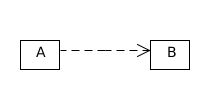
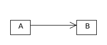
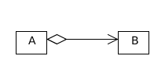
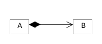
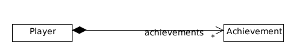
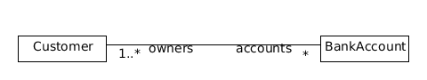
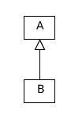
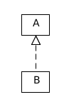
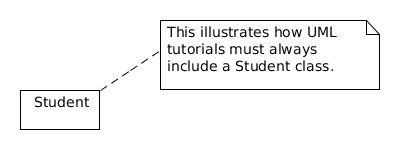

本文定义了一个 Java UML 标准，同时详细分析了各种 Delegation 及其 UML 表示。
class 和 interface
class 的类图由三部分组成：类名、域、方法。
举例
public abstract class Example { |
访问权限
+表示 public，#表示 protected，-表示 private。
命名习惯
采用 Algol 命名风格，字符之间不需要任何空格。
-
变量
name:type
例如：y:int -
方法
name(params):type，每个 parameter 又是一个变量，返回值为void时省去type
例如：bar(y:int,z:int):int -
元数据
使用 guillemet（书名号）
«...»
例如：+«constructor» Example()、«interface» -
static 变量或方法
使用下划线
例如：+z:int -
抽象类或方法
使用斜体
例如：Example、#bar(y:int, z:int):int
interfaces 需要在类名部分增加 «interface»，并且省去变量部分，如下所示。
举例
public interface FooListener { |
各个类之间的关系表示
| 关系 | UML | 解释 |
|---|---|---|
| Dependency |  | A 依赖 B，联系较小，不常见 |
| Association |  | A 的实例调用 B 的实例 |
| Aggregation |  | A 由 B 组成，表现为 A 中有 B 类型的域 |
| Composition |  | A 由 B 组成，当 A 的实例被销毁时，B 的实例也会被销毁 |
| Multiplicity |  | 关系中有多少个对象，* 表示 ，还可以用常数（例如 1）或者范围（例如 2…*，表示 ） |
| Directionality |  | 省去箭头，表示关系具有双向性 |
| Generalization |  | A 较 B 更泛化，比如 B 是 A 的子类（extends） |
| Realization |  | B 实现 A，比如 B 是 A 的实现（implements） |
四种 Delegation 辨析
在哈工大软件构造课程 5.2 Construction for Reuse 中，详细介绍了四种 Delegation 的区别。
Dependency
这是一种很松散的关系，很少见。
class Course { ... } |
Association
Association 其实包含了两种种情况：Aggregation 和 Composition。3
class Course { ... } |
class Teacher { |
Aggregation：has_a，暂时拥有
- 计算机系暂时拥有一些教师，如果院系解散，教师人可以继续存在
- 车子有轮胎，车坏了，轮胎可能还能用在其他地方
class Student { ... } |
Composition：is_part_of，同生共死
- 学校一旦倒闭，计算机系也不再存在了
- 人一旦死，手、脚、❤都没有了灵魂，不再有意义了
class Heart {} |
注意：平时当我们不太清楚是 aggregate 还是 composite 时，一般都是用 associate。因为 aggregate 和 composite 这两种关系非常容易界定，但是有其他一些情况各个类之间的联系一般是动态确定的，这种情况使用 associate 更加合理。
注释
与任意一个 UML 组件用虚线连接。
参考资料
- All the UML you need to know
- Software Construction at HIT | 5.2 Construction for Reuse
- UML Association vs Aggregation vs Composition
- What is the difference between association, aggregation and composition?